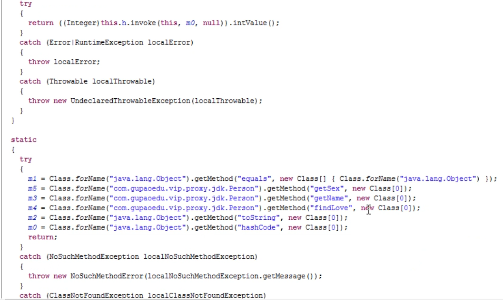
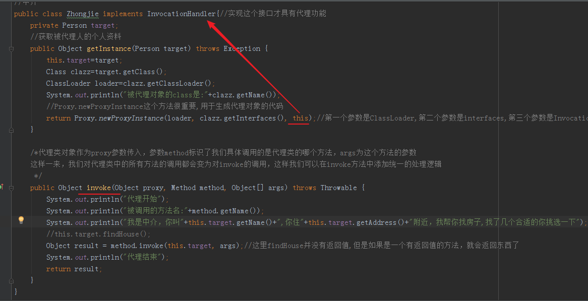

Spring中的代理
代理模式（Proxy）
特点:
1、 有2个角色，执行者、被代理人
2、 对于被代理人来说，这件事情是一定要做的，但是我自己不想做或者没有时间做，找代理做
3、 需要获取到被代理的人个人资料，只是参与整个过程的某个或几个环节
生活中的案例:
租房中介、
售票黄牛、
婚介、
经纪人、
快递、事务代理、非侵入式日志监听
应用场景：为其他对象提供一种代理以控制对这个对象的访问。从结构上来看和Decorator模式类似，但Proxy是控制，更像是一种对功能的限制，而Decorator是增加职责。
Spring的Proxy模式在AOP中有体现，比如JdkDynamicAopProxy和Cglib2AopProxy。
代码举例：租房子
定义一个人，要找房子
package findHouse;
public interface Person {
String getName();
String getAddress();
void findHouse();
void anotherMethod();
}
定义个张三，要找房子
package findHouse;
public class Zhangsan implements Person{
private String name="张三";
private String address="西湖";
public void findHouse() {
System.out.println("我是"+this.getName()+",我住"+this.getAddress()+"附近，要租房子");
}
public void anotherMethod() { System.out.println("另一个方法"); }
public String getName() { return name; }
public void setName(String name) { this.name = name; }
public String getAddress() { return address; }
public void setAddress(String address) { this.address = address; }
}
如果不使用任何模式，最简单的调用是这样
package findHouse;
public class TestFindHouse {
public static void main(String[] args) {
Person person=new Zhangsan();
person.findHouse();
}
}
但是张三是个上班族，没时间租房子，就去找中介。
中介类
在使用动态代理时，我们需要定义一个位于代理类与委托类之间的中介类，这个中介类被要求实现InvocationHandler接口
package findHouse;
import java.lang.reflect.InvocationHandler;
import java.lang.reflect.Method;
import java.lang.reflect.Proxy;
//中介
public class Zhongjie implements InvocationHandler{//实现这个接口才具有代理功能
private Person target;
//获取被代理人的个人资料
public Object getInstance(Person target) throws Exception {
this.target=target;
Class clazz=target.getClass();
ClassLoader loader=clazz.getClassLoader();
return Proxy.newProxyInstance(loader, clazz.getInterfaces(), this);//第一个参数是ClassLoader,第二个参数是interfaces,第三个参数是InvocationHandler
}
public Object invoke(Object proxy, Method method, Object[] args) throws Throwable {
System.out.println("代理开始");
System.out.println("我是中介，你叫"+this.target.getName()+",你住"+this.target.getAddress()+"附近，我帮你找房子,找了几个合适的你挑选一下");
//this.target.findHouse();
Object result = method.invoke(this.target, args);//这里其实并没有返回值
System.out.println("代理结束");
return result;
}
}
从InvocationHandler这个名称我们就可以知道，实现了这个接口的中介类用做“调用处理器”。当我们调用代理类对象的方法时，这个“调用”会转送到invoke方法中，代理类对象作为proxy参数传入，参数method标识了我们具体调用的是代理类的哪个方法，args为这个方法的参数。这样一来，我们对代理类中的所有方法的调用都会变为对invoke的调用，这样我们可以在invoke方法中添加统一的处理逻辑（也可以根据method参数对不同的代理类方法做不同的处理）
中介类实现InvocationHandler接口，作为调用处理器”拦截“对代理类方法的调用
测试类
package findHouse;
public class TestFindHouse {
public static void main(String[] args) {
Zhongjie zhongjie=new Zhongjie();//中介
try {
Person obj=(Person)zhongjie.getInstance(new Zhangsan());
System.out.println("代理后生成的class:"+obj.getClass().getName());
obj.findHouse();
//obj.anotherMethod();
} catch (Exception e) {
e.printStackTrace();
}
}
}
从以上代码中我们可以看到，中介类持有一个委托类对象引用，在invoke方法中调用了委托类对象的相应方法，
感觉上就是 ，中介类可以在调用张三的找房方法前，先执行一些逻辑，然后调用张三的找房，然后在执行以下后续方法。
有点像我们现实生活中的情况，比如你要买房，中介在你签字前做了大量工作，找房东，拿钥匙，联系贷款银行问利率，帮你算总价，分期等，你决定要买了之后你只需要签字即可(调用委托对象的相应方法)，你签完字，中介还要继续后续银行放款，权证房产证契税缴纳，房管局取送资料，最后交付。 你只需要签字付钱即可。
贷款利率变了，手续流程变了，你不需要关心，你只要签字，脏活累活业务强相关的代理类帮你干了。
在编程中也一样，某些东西流程变了，委托类不需要管，代理类帮你管好，你的核心流程不变。这样就省心多了
动态代理的优势在于可以很方便的对代理类的函数进行统一的处理，而不用修改每个代理类的函数
原理：
1 拿到被代理对象的引用（张三类），然后获取它的接口
2 JDK代理重新生成一个类，同时实现我们给的代理对象所实现的接口 （Person接口）
3 把被代理对象的引用也拿到了
4 重新动态生成一个class字节码
5 然后编译
你委托类(被代理类)的原始方法是不改的，只是在你前面，在你后面加了一些逻辑
把JVM编译后的代理类的class字节获取到然后反编译看下


这个this.h是什么？ 在父类Proxy中可以看到这个h

this.h就是InvocatinHandler

我们把生成的proxy0.class的字节码反编译输出看下


h就是InvocationHandler

我们代码中
Proxy.newProxyInstance(loader, clazz.getInterfaces(), this) 把Zhongjie的this当做第三个参数传入,所以h就是中介类
所以上图代码中的
this.h.invoke(this.m4.null)就是调用了 zhangsan类中的invoke方法，而中介类的invoke的代码是
System.out.println("代理开始");
System.out.println("我是中介，你叫"+this.target.getName()+",你住"+this.target.getAddress()+"附近，我帮你找房子,找了几个合适的你挑选一下");
Object result = method.invoke(this.target, args);//这里其实并没有返回值
System.out.println("代理结束");
return result;
其中有一行是
Object result = method.invoke(this.target, args);
又调用了method.lnvoke,这才真正调用了张三的实际方法，但是在调用张三方法之前和之后，就是我们在代理类中需要在调用张三方法之前需要执行的操作，达到了我们的目的
了解清楚代理原理和代理模式对后续看Spring源码有帮助。 修炼内功心法
自己编写Proxy和ClassLoader,InvocationHandler
根据接口生成java代码的方法
//重新根据接口生成代码(拼代码)
private static String generateSourceCode(Class<?> interfaces) {
//包名
StringBuilder sourceCode=new StringBuilder("package org.rico.learnSpring.customProxy;").append(ln);//包名
//导包
sourceCode.append("import java.lang.reflect.Method;").append(ln).append(ln);
//声明类
sourceCode.append("public class $Proxy0 implements ").append(interfaces.getName()).append("{").append(ln);//这里只实现了一个，如果通用的话要写循环//这里的类名是随便的，只要.java文件和类名一样就可以了这里是$Proxy0
sourceCode.append(" MyInvocationHandler h;").append(ln);//域 局部变量
//构造函数
sourceCode.append(" public $Proxy0(MyInvocationHandler h){").append(ln);//这个构造函数名应该是动态生成的，但是这里写死了,为了方便
sourceCode.append(" this.h=h;").append(ln);
sourceCode.append("}").append(ln);//匹配public $Proxy0的{
for(Method m:interfaces.getMethods()){
sourceCode.append(" public ").append(m.getReturnType().getName()).append(" ").append(m.getName()).append("(){").append(ln);//我们的Person方法都是无参的，这里也是图简便，应该是要把参数也遍历出来的
sourceCode.append(" try{").append(ln);
//获取这个Method
sourceCode.append(" Method m = ").append(interfaces.getName()).append(".class.getMethod(\"").append(m.getName()).append("\",new Class[0]);").append(ln);//new Class[]{}
sourceCode.append(" this.h.invoke(this,m,null);").append(ln);
sourceCode.append(" }catch(Throwable e){e.printStackTrace();}").append(ln);
if(!m.getReturnType().getName().equals("void")){//如果返回值不为空,返回
sourceCode.append(" return null;").append(ln);//这里为了方便直接返回null
}
sourceCode.append(" }").append(ln);
}
sourceCode.append("}");//匹配public class 的 {
return sourceCode.toString();
}
生成的java代码
编写的这个generageSourceCode方法也是不断尝试，直到生成的.java文件放在工程中不报错了就可以了 ,经常会出现括号不成对出现，返回值，大小写等的问题
编译java文件成class文件
//3 编译源代码 ,并且生成.class文件
try {
JavaCompiler compiler= ToolProvider.getSystemJavaCompiler();//javax提供的编译器
StandardJavaFileManager manager=compiler.getStandardFileManager(null,null,null);
Iterable iterable=manager.getJavaFileObjects(f);//获取迭代器 就是为了找到Java文件
JavaCompiler.CompilationTask task=compiler.getTask(null,manager,null,null,null,iterable);//编译任务
task.call();
manager.close();
} catch (IOException e) {
e.printStackTrace();
}
完整源码
测试类
package org.rico.learnSpring.customProxy;
import org.rico.learnSpring.findHouse.Person;
import org.rico.learnSpring.findHouse.Zhangsan;
public class TestFindHouse {
public static void main(String[] args) {
MyZhongjie zhongjie=new MyZhongjie();//中介
try {
Person obj=(Person)zhongjie.getInstance(new Zhangsan());//代理出来的对象可以强转成接口的 ，当然zhangsan也要实现Person
System.out.println("代理后生成的class:"+obj.getClass().getName());
obj.findHouse();
//obj.anotherMethod();
} catch (Exception e){
e.printStackTrace();
}
}
}
中介类 MyZhongjie.java
package org.rico.learnSpring.customProxy;
import org.rico.learnSpring.findHouse.Person;
import java.lang.reflect.Method;
//房屋中介类
public class MyZhongjie implements MyInvocationHandler{
private Person target;
//获取被代理人的个人资料
public Object getInstance(Person target) throws Exception {
this.target=target;
Class clazz=target.getClass();
System.out.println("被代理对象的class是:"+clazz.getName());
return MyProxy.newProxyInstance(new MyClassLoader(), clazz.getInterfaces(), this);//第一个参数是ClassLoader,第二个参数是interfaces,第三个参数是InvocationHandler也即本身，因为zhongjie本身实现了InvocationHandler
}
public Object invoke(Object proxy, Method method, Object[] args) throws Throwable {
System.out.println("代理开始");
System.out.println("我是中介，你叫"+this.target.getName()+",你住"+this.target.getAddress()+"附近，我帮你找房子,找了几个合适的你挑选一下");
Object result = method.invoke(this.target, args);//这里其实并没有返回值
System.out.println("代理结束");
return result;
}
}
其中用到了MyProxy和MyInvocationhandler接口还有MyClassLoader
代理类MyProxy.java的newProxyInstance会生成新的java源码并编译成class然后classLoader会加载进JVM,gtInstance方法return的就是这个新生成并加载的class 然后用Person接口来接收(在测试类中)，然后调用findHouse时就调用了这个新生成的类的findHouse(见上图新“生成的类”) 而这个findHouse方法又调用了中介的invoke方法，当然会把实际调用的方法名也传入，例如findhouse，然后调到了中介的invoke方法，中介的invoke方法是
System.out.println("代理开始");
System.out.println("我是中介，你叫"+this.target.getName()+",你住"+this.target.getAddress()+"附近，我帮你找房子,找了几个合适的你挑选一下");
Object result = method.invoke(this.target, args);//这里其实并没有返回值
System.out.println("代理结束");
return result;
其中有一行是
Object result = method.invoke(this.target, args);
又调用了method.lnvoke,这才真正调用了张三的实际方法，但是在调用张三方法之前和之后，就是我们在代理类中需要在调用张三方法之前需要执行的操作，达到了我们的目的
下面是MyProxy的代码
package org.rico.learnSpring.customProxy;
import javax.tools.JavaCompiler;
import javax.tools.StandardJavaFileManager;
import javax.tools.ToolProvider;
import java.io.File;
import java.io.FileWriter;
import java.io.IOException;
import java.lang.reflect.Constructor;
import java.lang.reflect.Method;
//这个类会生成代理对象的代码
public class MyProxy {
private static final String ln="\n";//换行
//这个方法很重要 用于生成代理对象的代码
public static Object newProxyInstance(MyClassLoader loader, Class<?>[] interfaces, MyInvocationHandler h) {
//1 生成源代码
String proxySourceCode=generateSourceCode(interfaces[0]);
//2 将生成的源代码输出到磁盘，保存为.java文件
final String filePath = MyProxy.class.getResource("").getPath();
//final String filePath = "C:\\Users\\chenhongjie\\Desktop\\";
File f= new File(filePath+"$Proxy0.java");//.java文件名和类名一致
try {
FileWriter fw=new FileWriter(f);
fw.write(proxySourceCode);
fw.flush();
fw.close();
} catch (IOException e) {
e.printStackTrace();
}
//3 编译源代码 ,并且生成.class文件
try {
JavaCompiler compiler= ToolProvider.getSystemJavaCompiler();//javax提供的编译器
StandardJavaFileManager manager=compiler.getStandardFileManager(null,null,null);
Iterable iterable=manager.getJavaFileObjects(f);//获取迭代器 就是为了找到Java文件
JavaCompiler.CompilationTask task=compiler.getTask(null,manager,null,null,null,iterable);//编译任务
task.call();
manager.close();
//4 通过MyClassLoader将class文件中的内容动态加载到JVM中来
Class proxyClass=loader.findClass("$Proxy0");
Constructor c=proxyClass.getConstructor(MyInvocationHandler.class);//定义构造函数
f.delete();//获取到构造函数后可以把源文件删掉 JDK是这么做的，当然你也可以不删
//5 返回被代理后的代理对象
return c.newInstance(h);
} catch (Exception e) {
e.printStackTrace();
}
return null;
}
//重新根据接口生成代码(拼代码)
private static String generateSourceCode(Class<?> interfaces) {
//包名
StringBuilder sourceCode=new StringBuilder("package org.rico.learnSpring.customProxy;").append(ln);//包名
//导包
sourceCode.append("import java.lang.reflect.Method;").append(ln).append(ln);
//声明类
sourceCode.append("public class $Proxy0 implements ").append(interfaces.getName()).append("{").append(ln);//这里只实现了一个，如果通用的话要写循环//这里的类名是随便的，只要.java文件和类名一样就可以了这里是$Proxy0
sourceCode.append(" MyInvocationHandler h;").append(ln);//域 局部变量
//构造函数
sourceCode.append(" public $Proxy0(MyInvocationHandler h){").append(ln);//这个构造函数名应该是动态生成的，但是这里写死了,为了方便
sourceCode.append(" this.h=h;").append(ln);
sourceCode.append("}").append(ln);//匹配public $Proxy0的{
for(Method m:interfaces.getMethods()){
sourceCode.append(" public ").append(m.getReturnType().getName()).append(" ").append(m.getName()).append("(){").append(ln);//我们的Person方法都是无参的，这里也是图简便，应该是要把参数也遍历出来的
sourceCode.append(" try{").append(ln);
//获取这个Method
sourceCode.append(" Method m = ").append(interfaces.getName()).append(".class.getMethod(\"").append(m.getName()).append("\",new Class[0]);").append(ln);//new Class[]{}
sourceCode.append(" this.h.invoke(this,m,null);").append(ln);
sourceCode.append(" }catch(Throwable e){e.printStackTrace();}").append(ln);
if(!m.getReturnType().getName().equals("void")){//如果返回值不为空,返回
sourceCode.append(" return null;").append(ln);//这里为了方便直接返回null
}
sourceCode.append(" }").append(ln);
}
sourceCode.append("}");//匹配public class 的 {
return sourceCode.toString();
}
}
MyClassLoader.java的代码
package org.rico.learnSpring.customProxy;
import java.io.ByteArrayOutputStream;
import java.io.File;
import java.io.FileInputStream;
import java.io.IOException;
//实现了代码生成，编译，动态重新load到JVM中
public class MyClassLoader extends ClassLoader {
private final File baseDir;
public MyClassLoader(){
final String basePath=MyClassLoader.class.getResource("").getPath();
this.baseDir=new File(basePath);
}
@Override
protected Class<?> findClass(String name) throws ClassNotFoundException {
//加载到JVM中来
String className=MyClassLoader.class.getPackage().getName()+"."+name;
System.out.println(className);
if(baseDir!=null){
File classFile=new File(baseDir,name.replace("\\.","/")+".class");//点.替换成斜杠/
if(classFile.exists()){
FileInputStream in=null;
try{
in =new FileInputStream(classFile);
ByteArrayOutputStream out=new ByteArrayOutputStream();
byte [] buff=new byte[1024];
int len;
while ((len=in.read(buff))!=-1){
out.write(buff,0,len);;
}
out.close();
return defineClass(className,out.toByteArray(),0,out.size());
}catch (Exception e){
e.printStackTrace();
}finally {
if(null!=in){
try {
in.close();
} catch (IOException e) {
e.printStackTrace();
}
}
classFile.delete();//加载到jvm后delete掉(要在in，out都删掉之后再关) JDK是删掉的，当然你也可以不删掉
}
}
}
return null;
}
}
MyInvocationHandler.java的代码
JDK原生的InvocationHandler也是一个接口，用于代理类来实现的,本例中就是中介
package org.rico.learnSpring.customProxy;
import java.lang.reflect.Method;
public interface MyInvocationHandler{
public Object invoke(Object proxy, Method method, Object[] args) throws Throwable;
}
代理成功!

通过这个案例就理解了JDK动态代理的原理,真正是如何实现的
复习一下原理
拿到被代理对象的引用（张三类），然后获取它实现的接口接口也就是Person
JDK代理重新生成一个类，同时实现我们给的代理对象所实现的接口 （Person接口）给每个方法内部实现都写成this.h.invoke,这样就变成了调用中介类的invoke，当然也会把实际需要调用的方法名传入给中介的invoke以便执行完代理逻辑前/后调用真正的方法
总结一下有点像狸猫换太子：新生成一个类，类里的所有方法都去调用代理类的那个invoke方法，同时把真正需要调用的方法名也传入。 然后代理类的invoke就被执行了，然后代理类的invoke在执行代理逻辑时再调用下真实那个被代理类的那个方法
总结：字节码重组
上面的JDK的动态代理一定要写一个接口,例如案例中的Person(张三实现了Person接口，所以在张三类中可以拿到它实现的接口也就是Person),因为我们生成的class文件需要实现这个接口,所以必须要这个接口，否则实现不了。CGlib不需要接口就可以实现动态代理
代理的实现分动态代理和静态代理
静态代理的实现是对已经生成了的JAVA类进行封装。
动态代理则是在运行时生成了相关代理类，在JAVA中生成动态代理一般有两种方式
- JDK实现代理生成，是用类 java.lang.reflect.Proxy, 实现方式 就是上面这个案例
- 用CGLib实现 CGLIB是一个开源项目
Spring中，bean都是由动态代理生成出来的 Spring AOP中，当拦截对象实现了接口时，生成方式是用JDK的Proxy类。当没有实现任何接口时用的是GCLIB开源项目生成的拦截类的子类. Spring是集成了CGLib的
CGLib的实现原理: 自动生成一个类，继承自己的那个被代理类，然后把子类的引用指向父 类 ,同样是做了字节码重组，
好处就是可以少写一个接口 ,对于使用API的用户来说是无感知的
CGLib案例
Zhangsan.java 张三
public class Zhangsan {
public void findHouse(){
System.out.println("我要找房子");
}
}
中介 Zhongjie.java
public class Zhongjie implements MethodInterceptor {//interceptor的英文意思是拦截机
public Object getInstance (Class clazz) throws Exception{
//通过反射机制，实例化
Enhancer enhancer=new Enhancer();
//把父类设置为谁?
enhancer.setSuperclass(clazz);//传入被代理对象的Class,这一步就是告诉cglib，生成的子类需要继承哪个类
enhancer.setCallback(this);//设置回调 后续this.h.invoke调用的是本身的intercept方法
return enhancer.create();//第一步生成源代码,第二步编译Class,第三步加载到JVM中,并返回被代理后的对象
}
@Override
public Object intercept(Object obj, Method method, Object[] args, MethodProxy methodProxy) throws Throwable {//这里的obj并不是我们new出来的被代理对象的引用，而是被代理对象的class
System.out.println("代理开始");
System.out.println("被调用的方法名:"+method.getName());
//这个obj的引用是由CGLib给我们new出来的,CGLib new出来以后的对象是被代理对象的子类(继承了我们自己写的那个被代理对象也就是Zhangsan.java)
//new子类的同时，必须先new出父类来，这就相当于是间接的持有了我们父类的引用,子类重写了父类的所有的方法,变成类似于this.h.invoke(...),我们改变子类对象的某些属性是可以间接的操作父类的属性的
Object result=methodProxy.invokeSuper(obj,args);//一定是调Super,这里调用Super其实就是原始的那个被代理对象的那个原始方法.不能写Invoke不然会死循环 相当于在findHose中调用findHouse
System.out.println("代理结束");
return result;
}
}
测试类,main方法
public static void main(String[] args) {
//JDK的动态代理是通过接口来进行强制转换的,生成以后的代理对象可以强制转换为接口
//CGLib的动态代理是通过生成一个被代理对象的子类，然后重写父类的方法,生成以后的对象时可以强制转换为被代理对象,子类引用赋值给父类
Zhongjie zhongjie =new Zhongjie();
try{
//Zhangsan zhangsan=(Zhangsan)zhongjie.getInstance(new Zhangsan());//其实没用到这个对象的引用，只需要它的class，这样写只是方便，在Zhongjie.java中也是obj.getClass,为了不避免误会，采用下面的方式
Zhangsan zhangsan=(Zhangsan)zhongjie.getInstance(Zhangsan.class);
zhangsan.findHouse();
} catch (Exception e) {
e.printStackTrace();
}
}
代理模式用的最多的就是SpringAOP
可以做什么事情？可以在每一个方法调用之前加一些代码，在方法调用之后再加一些代码
AOP一般用在哪里 :事务代理(声明式事务,哪个方法需要加事务，哪个方法不需要加事务s)、日志
在调用service方法之前开启(open)一个事务，事务的执行是由我们自己的代码完成的，事务执行完成后监听是否有异常，可能要根据异常的类型来决定这个事务是否要回滚(rollaback)还是继续提交(commit)，最后事务还要关闭(close)
上面的流程中，除了事务的执行(加粗部分)，其他操作都是AOP帮我们做的
AOP是通过代理这种技术来实现的，AOP不是代理，代理也不是AOP
何时Spring使用JDK/CGLib代理
当有接口时使用JDK动态代理，没有时使用CGLib动态代理。
当proxyTargetClass为true是不管什么情况都使用CGLib
扩展阅读:
https://www.jianshu.com/p/942a4a349ac4
https://www.jianshu.com/p/774c65290218
https://www.cnblogs.com/lianghaoc/p/5699537.html
https://segmentfault.com/a/1190000007089902
This blog is under a CC BY-NC-SA 3.0 Unported License
本文链接：http://hogwartsrico.github.io/2018/09/01/proxy-in-Spring/